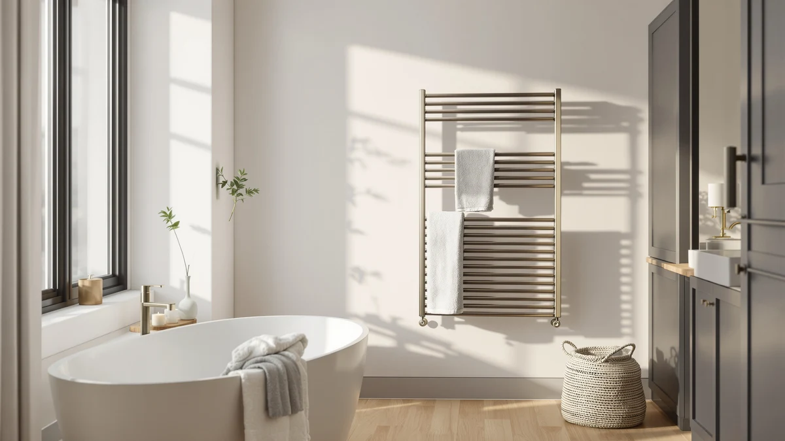

Best Towel Warmer vs Dryer (2026) | Best Towel Warmers
Prices and picks verified as of September 2026. Independent, reader-supported reviews.


Things to Know Before You Buy
- A towel warmer heats a towel in place on a rack. A dryer tumbles it with hot air for a few minutes.
- A warmer draws 60 to 150 watts and costs about 3 to 5 cents an hour to run, far less than the 30 to 50 cents a dryer cycle adds to your bill.
- A dryer dries and fluffs a full load. A towel warmer keeps an already-dry towel warm and helps a damp one dry over a couple of hours.
- Warmers need wall space or a floor corner near an outlet. A dryer needs a laundry room, a vent, and a 120 or 240 volt hookup.
- You want the warmer for spa-warm towels every morning, and the dryer for speed and drying a whole wash at once.
The towel warmer vs dryer question comes down to what a warm towel is worth to you in cash and floor space, and how much fuss you will put up with each morning. Both hand you a cozy towel after a shower, and they get there in very different ways. A towel warmer heats the towel where it hangs and runs all day for pennies. A dryer blasts a whole load with hot air in one short burst. You are choosing between a piece of bathroom furniture and an appliance you probably already own.
You clicked on this comparison because you want warm towels without wasting money or space, and the pitch on both sides muddies the choice. We compared heated racks and towel-warming cabinets against the standard tumble dryer on the three things that change your morning: what each one costs to run, how much room it eats, and how the towel feels when you reach for it. By the end you will know which one fits your bathroom and your habits.
Quick Answer
In the towel warmer vs dryer matchup, the towel warmer wins for warm, ready-to-use towels every day at almost no running cost, and the APORDROUCA Electric Towel Warmer Wall Mounted is the pick most people should start with at $98.99. A dryer is the better choice when you mainly need to dry wet towels and laundry fast and do not want another fixture on the wall. Choose the warmer for comfort and low daily cost, and the dryer for speed and drying power.
What is Towel Warmer?
A towel warmer is a heated rack or cabinet that you drape a towel over so it stays warm and dry between uses. Most home models plug into a standard outlet and use a low-watt heating element inside metal bars. You hang the towel in the morning, and by the time you finish your shower it is warm to the touch. The heat also drives moisture out of a damp towel, which keeps it from staying sour and musty in a closed bathroom.
In the towel warmer vs dryer comparison, the warmer sits closer to furniture than to an appliance. Wall-mounted versions like the APORDROUCA rack screw into the wall and free up your floor. Freestanding models such as the Poloma stand in a corner and move wherever you plug them in. Cabinet units like the EarthLite heat a whole stack of towels to spa temperature, which is why salons use them. None of these dry a full laundry load. A towel warmer keeps towels warm and finishes off dampness, and that narrow job is exactly what makes it cheap to run and easy to leave on.
What is Dryer?
A dryer is the tumble appliance in your laundry room that spins wet clothes and towels through hot air until they come out dry and fluffy. It pulls a lot of power, usually 2,000 to 5,000 watts, and finishes a towel load in 30 to 45 minutes. The tumbling motion does something a warmer cannot: it lifts the fibers and restores loft, so a towel out of the dryer feels thicker and softer than one air-dried flat on a rack.
The dryer is a general-purpose machine, not a bathroom comfort item. You already own one for the rest of your laundry, so warming towels in it costs you nothing extra to buy. The trade-off is that heat lasts only as long as the towel stays inside. Pull a warm towel out, walk it to the bathroom, and it starts cooling right away. A dryer also needs real infrastructure. You need a laundry room, a vent to the outside, and a 120 or 240 volt hookup, none of which fits inside a small bathroom.
Head-to-Head: Build Quality & Durability
On build, this comes down to simple versus complex. A towel warmer is a set of heated metal bars with one low-watt element and, on better models, a timer. Fewer moving parts means fewer things break. Stainless steel racks like the APORDROUCA and the nine-bar DAWEYEAL resist bathroom humidity and often run for years without service. The main failure point is the element or the switch, and both are cheap if the unit is out of warranty.
A dryer is a heavier machine with a motor, a drum, a belt, a blower, and a heating coil, all working under load for 40 minutes at a stretch. You get far more capability, and you also get more parts that wear. Belts stretch, lint builds up, and heating elements burn out, so most home dryers need a repair or two across a ten-year life. The upside is that dryers are built for that lifespan and parts are easy to find. If you want a fixture that quietly lasts with almost no maintenance, the warmer is the sturdier bet. If you want a machine that does heavy work and can be serviced when it acts up, the dryer earns its complexity.
Head-to-Head: Price & Value
Price is where the towel warmer vs dryer math flips depending on what you already own. A home towel warmer runs from about $75 for a compact Pursonic rack to $280 for a large EarthLite cabinet, with solid mid-range picks like the APORDROUCA landing near $99. A new dryer costs $500 to $1,200, so on the sticker alone the warmer is far cheaper. The catch is that you probably already own a dryer, which makes its extra cost for warming towels effectively zero.
Running cost tips back the other way. A warmer sips power at 3 to 5 cents an hour, while a dryer cycle adds 30 to 50 cents each time. Leave a warmer on for a few hours a day and you spend a couple of dollars a month. Value depends on which cost you care about. The warmer wins on a low, predictable power bill; the dryer wins if you refuse to buy a second device.
Head-to-Head: Use Experience
Day to day, the towel warmer vs dryer choice shapes your whole bathroom routine. With a warmer, you hang the towel the night before or set a timer to switch on 30 minutes before your alarm. You step out of the shower and wrap yourself in a towel that is already warm and waiting on the rack. You do not have to walk anywhere, time a machine, or grab a cold towel in between. The warmth is gentle and steady rather than hot, and it stays that way as long as the rack is on.
A dryer gives you a hotter, fluffier towel, but the timing fights you. You have to remember to start a cycle, then grab the towel and carry it to the bathroom before it cools. Miss the window by ten minutes and the warmth is gone. The dryer also fluffs the fibers in a way a warmer cannot match, so if you love a thick, lofty towel, the dryer feels better in the hand. For a warm towel every single morning with zero effort, the warmer wins the daily experience. For an occasional hot, freshly fluffed towel straight from the wash, the dryer delivers.
When to Choose Towel Warmer
Choose a towel warmer when a warm towel every morning matters more to you than raw drying speed. If you love the spa feeling of wrapping up in warmth after a shower, a heated rack delivers it on a schedule without you thinking about it. In the towel warmer vs dryer decision, the warmer also wins for anyone watching their power bill, since it costs a few cents a day to run. Renters and small-bathroom owners benefit too, because plug-in models like the freestanding Poloma or the compact Pursonic need no venting and no hardwiring. A warmer is the right call when you want comfort, low running cost, and a fixture that fits a bathroom without a laundry hookup.
When to Choose Dryer
Choose a dryer when your main job is drying wet towels and laundry fast, not keeping a dry towel warm. If you wash frequently and want towels that come out thick and fluffy in under an hour, the tumbling action does what no heated rack can. You also avoid buying a second device, since the dryer you already own handles the occasional warm towel for free. This is the practical pick for larger households, for anyone with a proper laundry room and vent, and for people who would rather not mount anything in the bathroom. Go with the dryer when speed, drying power, and using gear you already have outweigh the daily comfort of a rack that is always warm.
Our Top Picks
If the towel warmer vs dryer comparison points you toward a warmer, these three picks cover the range most people need, from an everyday wall rack to a spa-grade cabinet. Prices are current as of July 2026 and shift with Amazon stock.

Editor’s Pick
Electric Towel Warmer Wall Mounted
A wall-mounted rack that warms and dries a towel for pennies a day. The pick most bathrooms should start with.
$98.99
Check Price on Amazon
Best Value
Pursonic Deluxe Towel Warmer with
A plug-in deluxe warmer that holds a towel and a robe, with no drilling and no install cost. Ideal for renters.
$129.99
Check Price on Amazon
Premium Choice
EARTHLITE Hot Towel Warmer Cabinet
A cabinet that heats a full stack of towels to spa temperature. For those who want salon-level warmth at home.
$212.49
Check Price on AmazonIs a towel warmer cheaper to run than a dryer?
Yes.
Can a towel warmer fully dry a wet towel?
A towel warmer dries a damp towel, but it takes time.
Frequently Asked Questions
Is a towel warmer cheaper to run than a dryer?
Yes. A towel warmer draws about 60 to 150 watts, so an hour of use costs roughly 3 to 5 cents. A dryer pulls 2,000 to 5,000 watts and runs 40 minutes or more per load, which lands closer to 30 to 50 cents a cycle. Over a year of daily use, the warmer costs a small fraction of what the dryer adds to your power bill.
Can a towel warmer fully dry a wet towel?
A towel warmer dries a damp towel, but it takes time. A towel wet from a shower usually needs 2 to 4 hours on a heated rack to dry all the way, and a soaking towel takes longer. A dryer finishes the same towel in 30 to 45 minutes. If you can hang the towel ahead of time and want it warm and dry later, the warmer works. If you need it dried fast, the dryer is quicker.
Do I still need a dryer if I buy a towel warmer?
A towel warmer does not replace your dryer. The warmer keeps towels warm and helps damp ones dry between uses, but it cannot handle a full laundry load. Most people keep the dryer for washing and add a towel warmer in the bathroom for the comfort of a warm towel. The two tools do different jobs and work well side by side.
Which gives a softer, fluffier towel?
The dryer does. Tumbling lifts the fibers and restores loft, so a towel out of the dryer feels thicker and softer than one warmed flat on a rack. A towel warmer keeps a towel warm and prevents that musty, damp feel, but it will not add fluff. If softness matters most, dry the towel first, then a warmer keeps it cozy until you use it.
Is a towel warmer safe to leave on?
Most home towel warmers are built to stay on for long stretches, and the bars run warm rather than hot enough to scorch. To be safe, pick a model with a built-in timer or auto shut-off, like many wall-mounted and freestanding racks, so it powers down after a set period. Keep it away from anything flammable and use a grounded outlet. Treat it like any small heating appliance and it is safe for daily use.
Final Verdict
Neither device wins the towel warmer vs dryer question outright. The right one is the one that fits how you live. For a warm towel waiting every morning at a few cents a day, the towel warmer wins, and the APORDROUCA Electric Towel Warmer Wall Mounted is the pick most people should buy first at $98.99. For fast drying and thick, freshly fluffed towels from gear you already own, the dryer is the smarter tool. Buy the warmer for daily comfort and a low power bill, and lean on the dryer for speed and heavy loads.